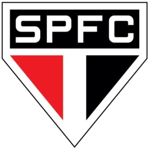

CA Paulistano
O São Paulo é dentre os grandes, não apenas o primeiro, como diz
o hino tricolor, mas também o mais jovem. Quando criado, o São
Paulo levava o nome de Club Athlético Paulistano, e era mais um
time amador da cidade.
Super tradicional em São Paulo, na zona mais nobre da cidade
chuvosa, o Athlético Paulistano nasceu do desejo da criação de
um time totalmente brasileiro e que representasse a cidade de
São Paulo. Naquele tempo, o futebol era praticado apenas por
clubes gringos, tendo ingleses e alemães como sua maioria.
Com o tempo, o futebol evoluiu. O clube tinha fortes raízes
amadoras e negava o “profissionalismo marrom” imposto no começo
dos anos 20. Para o CA Paulistano, o jogador deveria vestir a
camisa por paixão, por fidelidade, sendo sócio do clube. Ou
seja, na prática, deveria pagar ao clube, e não o contrário.
Em 1926 o Paulistano cria a da Liga dos Amadores de Futebol. A
liga durou pouco, não podendo enfrentar o dinheiro que “corria
por fora” na concorrência e, principalmente, a decisão da CBD de
não a reconhecer oficialmente a liga.
Assim, em 8 de janeiro de 1930, o Club Athlético Paulistano, que
era o maior clube de futebol da região então vê sua Liga ser
oficialmente dissolvida em uma reunião e abandona a modalidade.
Nem todos os dirigentes, sócios e jogadores concordaram com a
decisão, e os descontentes foram em busca de uma solução junto a
outro tradicional clube da capital, a Associação Athlética das
Palmeiras.
São Paulo FC

Em torno de 60 ex-membros do Paulistano, incluindo jogadores,
fizeram uma reunião com sócios e dirigentes da AA das Palmeiras.
No dia 26 de janeiro de 1930, na Praça da República, era
assinada a ata de fundação do São Paulo Futebol Clube.
A ideia inicial era fazer coincidir o nascimento do novo time
com o aniversário da cidade como um presente aos cidadãos
paulistanos, mas os estatutos não ficaram prontos a tempo. As
linhas iniciais desse primeiro documento oficial diziam o
seguinte: “O São Paulo Futebol Clube é uma instituição fundada
pelos sócios aficcionados do esporte de futebol do Club
Athletico Paulistano e pela Associação Athletica Palmeiras,
destinada a proporcionar aos seus sócios a prática de todas as
modalidades de esporte”.
Com isso, o São Paulo ainda herdou o Centro de Treinamento da
antiga Associação Atlética das Palmeiras, a chamada Chácara da
Floresta.
AA Palmeiras
Em 1930, boleiros insatisfeitos com o fim do futebol no Club
Athletico Paulistano (alvirrubro) e na AA das Palmeiras
(alvinegra) fundaram o primeiro São Paulo Futebol Clube, campeão
paulista já em 1931. O clube ficou conhecido como São Paulo da
Floresta por causa do estádio que herdou da AA das Palmeiras – a
Chácara da Floresta, Zona Norte, que chegou a ser o maior
estádio da cidade. O time tinha escudo e uniforme iguais aos do
tricolor de hoje (fundado em dezembro de 1935), que se considera
“preservador das glórias e tradições do São Paulo Futebol Clube,
da Floresta”.